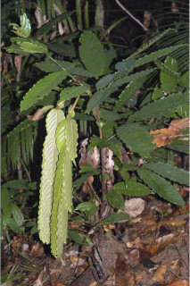
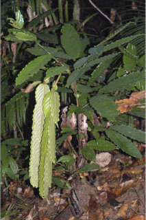
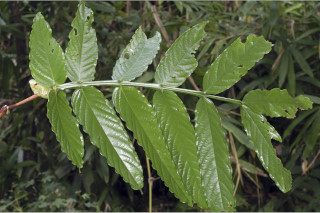
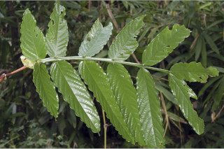

Trees up to 8 m tall.
8 ಮೀ. ಎತ್ತರದವರೆಗೆ ಬೆಳೆಯುವ ಮರಗಳು.
8 മീറ്റര് വരെ ഉയരത്തില് വളരുന്ന മരങ്ങള്.
மரம் 8 மீ. உயரம் வரை வளரக்கூடியது
Bark greyish white; blaze brownish.
ತೊಗಟೆ ಬೂದು ಮಿಶ್ರಿತ ಶ್ವೇತ ವರ್ಣದಲ್ಲಿದ್ದು ಕಚ್ಚು ಮಾಡಿದ ಜಾಗ ಕಂದು ಬಣ್ಣ ಹೊಂದಿರುತ್ತದೆ.
ചാര കലര്ന്ന വെളുപ്പ് നിറത്തിലുള്ള പുറംതൊലി; വെട്ടുപാടിന് തവിട്ട് നിറം.
மரத்தின் பட்டை சாம்பல் கலந்த வெள்ளை நிறமானது; உள்பட்டை ப்ரவுன் நிறமானது
Branchlets terete, pubescent when young.
ಕಿರುಕೊಂಬೆಗಳು ದುಂಡಾಕೃತಿಯಲ್ಲಿದ್ದು ಎಳೆಯದಾಗಿರುವಾಗ ಮೃದು ತುಪ್ಪಳದಿಂದ ಆವೃತಗೊಂಡಿರುತ್ತವೆ.
ഇളതായിരിക്കുമ്പോള് നനുത്ത രോമിലമായിരിക്കുന്ന, ഉരു ഉപശാഖകള്.
சிறிய நுனிக்கிளைகள் குறுக்குவெட்டுத் தோற்றத்தில் வளையமானது, புதிதாக தோன்றும் சிறிய நுனிக்கிளைகள் உரோமங்களுடையது.
Leaves compound, pinnate, alternate, distichous, pulvinate; rachis 30 cm or more long, distinctly winged; wings obcordate; stipules paired, foliaceous, to 7 (including apex) x 2 cm, lanceolate, caudate; appendage at the base of stipule oblanceolate or reniform, 4 x 5 cm; leaflets 4-6 pairs, opposite, sessile, pink or white and pendulous when young, lamina 12-32 x 6-10 cm, oblong-lanceolate, lowest pairs usually narrow ovate, apex caudate, base rounded or subcordate, margin entire, subcoriaceous; midrib impressed above; secondary_nerves ca. 12 pairs, looped; tertiary_nerves reticulate.
ಎಲೆಗಳು ಸಂಯುಕ್ತ ಗರಿರೂಪಿ ಮಾದರಿಯಲ್ಲಿದ್ದು, ಪರ್ಯಾಯ ಜೋಡನಾ ವ್ಯವಸ್ಥೆ ಹೊಂದಿದ್ದು ಕಾಂಡದ ಎರಡೂ ಕಡೆಯ ಎದುರು ಬದುರಿನ ಲಂಬ ಸಾಲಿನಲ್ಲಿರುತ್ತವೆ, ಹಾಗೂ ಉಬ್ಬಿದ ಎಲೆಬುಡ ಹೊಂದಿರುತ್ತವೆ; ಅಕ್ಷದಿಂಡು 30 ಸೆ.ಮೀ.ಗೂ ಹೆಚ್ಚಿನ ಉದ್ದ ಹೊಂದಿದ್ದು ಪ್ರಾಮುಖ್ಯವಾಗಿ ರೆಕ್ಕೆಯುಕ್ತವಾಗಿರುತ್ತದೆ; ರೆಕ್ಕೆಗಳು ತಲೆಕೆಳಗೊಂಡ ಹೃದಯಾಕಾರದವು; ಕಾವಿನೆಲೆಗಳು ಜೋಡಿಯಾಗಿದ್ದು, ಎಲೆಪತ್ರವನ್ನು ಹೋಲುವಂತಿದ್ದು 7 ಸೆಂ. ಮೀ ಉದ್ದ (ತುದಿಯನ್ನು ಸೇರಿ) ಹಾಗೂ 2 ಸೆ.ಮೀ.ಅಗಲವುಳ್ಳ ಗಾತ್ರವನ್ನು ಹೊಂದಿದ್ದು, ಭರ್ಜಿಯಾಕಾರದಲ್ಲಿದ್ದು ಬಾಲರೂಪಿ ತುದಿಯನ್ನು ಹೊಂದಿರುತ್ತವೆ; ಕಾವಿನೆಲೆಗಳ ಬುಡದಲ್ಲಿರುವ ಉಪಾಂಗ ಬುಗುರಿ-ಭರ್ಜಿ ಸಮ್ಮಿಶ್ರದ ಅಥವಾ ಮೂತ್ರಕೋಶವನ್ನು ಹೋಲುವ ಆಕಾರದಲ್ಲಿದ್ದು 4x5 ಸೆ.ಮೀ. ಗಾತ್ರವನ್ನು ಹೊಂದಿರುತ್ತದೆ; ಕಿರು ಎಲೆಗಳು 4 ರಿಂದ 6 ಜೋಡಿಗಳಿದ್ದು ತೊಟ್ಟು ರಹಿತವಾಗಿದ್ದು ನಸುಗೆಂಪು ಅಥವಾ ಶ್ವೇತ ವರ್ಣ ಹೊಂದಿರುತ್ತವೆ ಮತ್ತು ಎಳೆಯದಾಗಿದ್ದಾಗ ಜೋತಾಡುತ್ತಿರುತ್ತವೆ, ಪತ್ರಗಳು 12 - 32 x 6 - 10 ಸೆ.ಮೀ. ಗಾತ್ರ, ಚತುರಸ್ರಾಕಾರ - ಭರ್ಜಿಯ ಆಕಾರ ಹೊಂದಿರುತ್ತವೆ, ತೀರಾ ಕೆಳಗಿನ ಜೋಡಿಗಳು ಸಾಮಾನ್ಯವಾಗಿ ಸಂಕುಚಿದವಾದ ಅಂಡಾಕಾರ ಹೊಂದಿರುತ್ತವೆ, ಪತ್ರದ ತುದಿ ಬಾಲರೂಪಿ, ಪತ್ರದ ಬುಡ ದುಂಡಾಗಿ ಅಥವಾ ಉಪ-ಹೃದಯಾಕಾರದಲ್ಲಿರುತ್ತದೆ. ಪತ್ರಗಳು ಉಪ-ತೊಗಲನ್ನು ಹೋಲುವಂತಿದ್ದು ನಯವಾದ ಅಂಚನ್ನು ಹೊಂದಿರುತ್ತವೆ; ಮಧ್ಯನಾಳ ಪತ್ರದ ಮೇಲ್ಭಾಗದಲ್ಲಿ ಅಚ್ಚೊತ್ತಿದಂತಿರುತ್ತದೆ; ಎರಡನೇ ದರ್ಜೆಯ ನಾಳಗಳು ಅಂದಾಜು 12 ಜೋಡಿಗಳಿದ್ದು ಕುಣಿಕೆಗೊಂಡಿರುತ್ತವೆ; ತೃತೀಯ ದರ್ಜೆಯ ನಾಳಗಳು ಜಾಲಬಂಧ ನಾಳ ವಿನ್ಯಾಸದವು.
ഏകാന്തരക്രമത്തില്, തിന്റെ രുഭാഗത്ത് മാത്രമായടുക്കിയ, ഏകാന്തരക്രമത്തില്പിച്ഛക ബഹുപത്രങ്ങള്; ബഹുപത്രാക്ഷത്തിന് 30 സെ.മി യോ കൂടുതലോ നീളം; വ്യക്തമായ ചിറകോട് കൂടിയതാണ്; ചിറകുകള് അപഹൃദയാകാരത്തിലുള്ളതാണ്; നീവാലോടുകൂടിയ, കുന്താകൃതിയുള്ളതും 7 സെ.മി വരെ നീളമുള്ളതും (അറ്റമടക്കം), 2 സെ.മി വരെ വീതിയുള്ളതുമായ പത്രസമാനമായ, അനുപര്ണ്ണങ്ങള് ജോഡികളായാണുള്ളത്; അനുപര്ണ്ണത്തിന്റെ കീഴെയുള്ള അംഗത്തിന് 4 സെ.മി നിളവും 5 സെ.മി വീതിയും, അപകുന്താകൃതിയോ വൃക്കാകാരമോ ആണ്; ഇളയതായിരിക്കുമ്പോള് പിങ്ക് നിറമോ വെളുപ്പു നിറമോ ഉള്ളതും തൂങ്ങിക്കിടക്കുന്നതുമായ, 4 മുതല് 6 വരെ ജോഡി, സമ്മുഖ, അവൃന്ത പത്രകങ്ങള് ആണുള്ളത്, പത്രക ഫലകത്തിന് 12 സെ.മി മുതല് 32 സെ. മി വരെ നീളവും, 6 സെ. മി മുതല് 10 സെ.മി വരെ വീതിയും, ആയത-കുന്താകാരവും, താഴത്തെ ജോഡികള് സാധാരണയായി വീതി കുറഢ്ഢ അണ്ഡാകാരവും പത്രാഗ്രം നീ വാലോട് കൂടിയതും, വൃത്താകാരമോ ഉപഹൃദയകാരമോ ആയ പത്രാധാരത്തോട് കൂടിയതുമാണ്, അരികുകള് അവിഭജിതം, ഉപചര്മ്മില പ്രകൃതം; മുഖ്യസിര മുകളില് വ്യക്തമാണ്; വളയം തീര്ക്കുന്ന, ഏതാ് 12 ജോഡി ദ്വിതീയ ഞരമ്പുകള്; ജാലിക തീര്ക്കുന്ന ത്രിതീയ ഞരമ്പുകള്.
கூட்டிலைகள், சிறகுவடிவக்கூட்டிலை (பின்னேட்), மாற்றுஅடுக்கமானவை, இருநெடுக்கு வரிசையிலையடுக்கம் (டைஸ்டிக்கஸ்), பல்வினேட்; ரேக்கிஸ் 30 செ.மீ. அல்லது அதைவிட நீளமானது, ரேக்கிஸ் இறகு போன்ற நீட்சியுடையது, இறகு தலைகீழ் இதய வடிவம் (கார்டேட்); இலையடிச்செதில்கள் ஜோடியானது, இலை போன்றது, 7 செ.மீ. வரை (நுனி வரை) X 2 செ.மீ., ஈட்டிவடிவம், வால் போன்று நீண்டது; இலையடிச்செதிலின் தளப்பகுதியில் உள்ள சிறிய பகுதி தலைகீழ் ஈட்டி வடிவம் அல்லது சிறுநீரக வடிவம், 4X5 செ.மீ.; சிற்றிலைகள் 4-6 ஜோடிகள், எதிரானது, காம்பற்றது, புதிதாக தோன்றிய சிற்றிலைகள் பிங்க் அல்லது வெள்ளை மற்றும் தொங்கியவை; இலை அலகு 12-32 X 6-10 செ.மீ., நீள்சதுரம் முதல் ஈட்டிவடிவம், அடியிலுள்ள ஜோடி சிற்றிலைகள் குறுகிய முட்டை வடிவம், அலகின் நுனி வால் போன்று நீண்டது, அலகின் தளம் வட்டமானது அல்லது இதய வடிவம் (சப்கார்டேட்) போன்றது, அலகின் விளிம்பு முழுமையானது, சப்கோரியேசியஸ்; மையநரம்பு மேற்பரப்பில் பதிந்தது; இரண்டாம் நிலை நரம்புகள் சராசரியாக 12 ஜோடிகள், வளைவானது; மூன்றாம் நிலை நரம்புகள் வலைப்பின்னல் அமைப்பு கொண்டது.
Inflorescence short racemes, axillary or on old wood; flowers with white petals and rosy pink sepals.
ಪುಷ್ಪಮಂಜರಿಗಳು ಅಕ್ಷಾಕಂಕುಳಿನಲ್ಲಿರುವ ಸಣ್ಣ ಗಾತ್ರದ ಮಧ್ಯಾಭಿಸರ ಮಾದರಿಯ ಮಂಜರಿಯಲ್ಲಿ ಅಥವಾ ಅತಿಬಲಿತ ಕೊಂಬೆಗಳ ಮೇಲಿರುತ್ತವೆ.
മൂത്ത തടിയിലോ കക്ഷങ്ങളിലോ ഉാകുന്ന ചെറിയ റസീം പൂങ്കുലകള്; വെളുത്ത ദളങ്ങളോടും റോസ്-പിങ്ക് നിറത്തിലുള്ള വിദളങ്ങളോടും കൂടിയ പൂക്കള്.
குட்டையான ரெசீம் மஞ்சரி இலைக்கோணங்களில் அல்லது முதிர்ந்த தண்டில் மஞ்சரி தோன்றும்; மலரில் புல்லி இதழ்கள், வெள்ளை நிறமான இதழ்களையும் மற்றும் அல்லி இதழ்கள் ரோசிபிங்க்.
Pod thin, brown, tomentose, 5 x 2.8 cm; seeds 2-3 round, flat.
ಪಾಡುಗಳು ತೆಳುವಾಗಿದ್ದು, ಕಂದು ಬಣ್ಣ ಹೊಂದಿದ್ದು ದಟ್ಟ ಮೃದು ತುಪ್ಪಳ ಸಮೇತವಿದ್ದು 5x2.8 ಸೆ.ಮೀ. ಗಾತ್ರ ಹೊಂದಿರುತ್ತವೆ; ಬೀಜಗಳು 2 ರಿಂದ 3 ಇದ್ದು ಗುಂಡಾಗಿ ಹಾಗೂ ಚಪ್ಪಟೆಯಾಗಿರುತ್ತವೆ.
കായ, 5 സെ.മി. നീളവും, 2.8 സെ.മി വീതിയും, തവിട്ടു നിറവും, നിറയെ രോമാവൃതവുമായ, നേര്ത്ത പോഡ് ആണ്; പരന്നതും, വൃത്താകാരത്തിലുള്ളതുമായ, 2 ഓ. 3ഓ വിത്തുകള്.
கனி மெல்லிய பாட் கனி (அவரைப்போன்றது), அரக்கு நிறம், அடர்ந்த பின்னிய உரோமங்களுடையது, 5 X 2.8 செ.மீ.; விதைகள் 2-3 வட்டமானது மற்றும் தட்டையானது.
 


 
